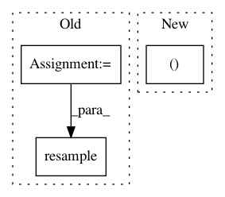

9541a61fc86840802e79e4310e9b064f2dd6be40,doc/examples/reconst_csd.py,,,#,8
Before Change
affine = img.get_affine()
zooms = img.get_header().get_zooms()[:3]
new_zooms = (2., 2., 2.)
from dipy.align.aniso2iso import resample
data2, affine2 = resample(data, affine, zooms, new_zooms)
print("data2.shape (%d, %d, %d, %d)" % data2.shape)
mask2 = data2[..., 0] > 50
After Change
fvtk.add(r, fvtk.sphere_funcs(csd_odf[30:60, 40:70, None], sphere))
print("Saving illustration as csd_odfs.png")
fvtk.record(r, n_frames=1, out_path="csd_odfs.png", size=(600, 600))
.. figure:: csd_odfs.png
In pattern: SUPERPATTERN
Frequency: 3
Non-data size: 3
Instances
Project Name: nipy/dipy
Commit Name: 9541a61fc86840802e79e4310e9b064f2dd6be40
Time: 2013-06-19
Author: garyfallidis@gmail.com
File Name: doc/examples/reconst_csd.py
Class Name:
Method Name:
Project Name: f90/Wave-U-Net
Commit Name: e55ccbb2ed0faca637a7d9b239ef6ee02b5d289d
Time: 2019-01-29
Author: matangover@gmail.com
File Name: Utils.py
Class Name:
Method Name: load
Project Name: pyannote/pyannote-audio
Commit Name: 1fac747306ceadbf1a01faa82ba2decfe0de059d
Time: 2018-06-29
Author: bredin@limsi.fr
File Name: pyannote/audio/features/utils.py
Class Name:
Method Name: read_audio